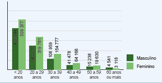
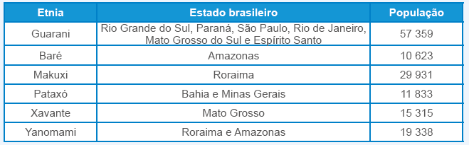

| Principais habilidades da BNCC | EF06MA02 |
|---|---|
| Competências | CG7, CG8, CG9, CE8 |
Teixeira (apud MORO; SOARES, 2005, p. 32), em seu artigo A representação semiótica como objeto de ensino e aprendizagem: as implicações pedagógicas para o ensino do sistema de numeração posicional, nos diz que, em geral, as crianças são capazes, desde cedo, de falar e reconhecer números, embora a compreensão dos princípios que regem a numeração escrita seja lenta e complexa. A compreensão da escrita numérica depende, por um lado, da ideia de quantidade ou da comparação aditiva do número e, por outro, do domínio do sistema de representação semiótica ou das regras convencionais para numeração escrita. Esse sistema tem como base os algarismos. Cada algarismo é um ideograma e, como tal, não tem relação intrínseca com o conceito ou com a palavra que representa o número. A significação de um algarismo depende, portanto, de uma convenção adotada para a escrita numérica decimal que se baseia na relação de posição que os algarismos mantêm entre si. Aprender a escrita numérica envolve dois aspectos básicos:
► Entender o valor posicional do algarismo e como o número pode ser lido de diferentes formas, expressando o significado operatório do mesmo (por exemplo: 123 pode ser lido como cento e vinte e três unidades; uma centena, duas dezenas e três unidades; doze dezenas e três unidades).
► Identificar as relações existentes entre a numeração falada e escrita, cuja natureza é homomorfa e não isomorfa, conforme assinala Vergnaud (1993). Ou seja, é preciso traduzir para o sistema escrito a numeração falada, processo que não é simples, tendo em vista que os sistemas de numeração falada e escrita não são regidos pelos mesmos princípios. A criança
EF06MA02
CAPÍTULO 3 - Sistema de numeração indo-arábico
Anteriormente, estudamos alguns sistemas de numeração que foram utilizados pelas civilizações antigas. Entretanto, o que é utilizado até hoje foi de-senvolvido pelos hindus, civilização que vivia no vale do Rio Indo.

IBGE. Atlas geográfico escolar. 6. ed. Rio de Janeiro: IBGE, 2012.
Esse sistema foi difundido, mais tarde, pelos árabes, por isso é conhecido como sistema de numeração indo-arábico. Nele são utilizados dez símbolos para representar os números, denominados de algarismos indo-arábicos. São eles: 0, 1, 2, 3, 4, 5, 6, 7, 8, 9
Vejamos algumas de suas características:
► é decimal, pois os agrupamentos são feitos de 10 em 10;
► é posicional, pois a posição que o algarismo ocupa no número é importante. Um mesmo algarismo pode assumir valores diferentes, de-pendendo da posição que ocupa. Essa posição indica a ordem do algarismo.
1 ↳ 1 × 100 = 100
3ª ordem (ordem das centenas)
2 ↳ 2 × 10 = 20
2ª ordem (ordem das dezenas)
3 ↳ 3
1ª ordem (ordem das unidades)
UNIDADE 1 - CAPÍTULO 3
22
22
precisa descobrir o que é transferível, de um sistema para o outro, e como isso pode ser feito, fato que se complica, no caso das línguas ocidentais, dada a irregularidade que elas apresentam quanto ao nome dos números (FUSON; KWON, 1991 apud PANIZZA, 2006).
Por isso no início do 6.º ano fazemos uma retomada e um aprofundamento do sistema de numeração posicional para então darmos continuidade ao estudo dos conjuntos numéricos ao longo dos anos finais do Ensino Fundamental.
Atividade 1
Deixe que os alunos deem suas opiniões sobre como podemos acompanhar a preservação das espécies catalogadas no Brasil e motive-os a pensarem em ações que podemos ter em nosso dia a dia para fazer a diferença, como a economia de água e demais recursos naturais e outras ações que eles podem citar. Enquanto eles argumentam e debatem o assunto, estão desenvolvendo a Competência geral 7 da BNCC.
O número 121 746 pode ser decomposto de várias formas:
121 746 = 100 000 + 20 000 + 1 000 + 700 + 40 + 6 (forma mais usual); 121 000 + 700 + 40 + 6; 100 000 + 20 000 + 1 000 + 746; entre outras possibilidades. Converse com os alunos e verifique quais as decomposições que eles realizaram.
EF06MA02
Os agrupamentos feitos de 10 em 10 recebem nomes especiais:
► 2 grupos de 10 unidades tem-se 2 dezenas;
► 1 grupo de 10 dezenas tem-se 1 centena.
Observe o quadro das ordens:
![Tabela com o quadro das ordens composto de 2 linhas e 11 colunas. Na primeira coluna primeira linha há três pontinhos, indicando sequência. Os mesmos três pontinhos na primeira coluna, segunda linha. Nas próximas colunas e linhas a numeração da ordem com o seu respectivo nome de unidade. Décima ordem corresponde a unidade de bilhão. Nona ordem, centenas de milhão. Oitava ordem, dezenas de milhão, sétima ordem, unidades de milhão. Sexta ordem, centenas de milhar. Quinta ordem, dezenas de milhar. Quarta ordem, unidades de milhar. Terceira ordem, centenas. Segunda ordem, dezenas. Primeira ordem, unidades simples.](../../resources/images/tabelacap.PNG)
ordem ordem ordem ordem ordem ordem ordem ordem ordem ordem
O número 123, por exemplo, pode ser escrito de várias formas:
► 1 centena, 2 dezenas e 3 unidades;
► 12 dezenas e 3 unidades;
► 123 unidades.
Esse número também pode ser representado como sendo 100 + 20 + 3.
Essa forma de representação é a forma decomposta do número.
► O zero é o símbolo utilizado para indicar a ausência de unidades. Ele indica que não há agrupamento de 10 naquela posição.
305 = 300 + 5
5 unidades
3 centenas
Composição e decomposição de um número natural
De acordo com o Catálogo Taxonômico da Fauna do Brasil (CTFB), em abril de 2015, mais de 500 pesquisadores começaram a trabalhar juntos com o objetivo de criar a primeira lista de espécies válidas de animais no território brasileiro. Até fevereiro de 2022, 121 746 espécies válidas de animais foram catalogadas no Brasil. Com o conhecimento dessas espécies é possível acompanhar a sua preservação.

1. Observe o número em destaque que indica a quantidade de espécies de animais conhecidas até fevereiro de 2022. Troque ideias com seu colega, e em seus cadernos, escrevam como o número 121 746 pode ser decom-posto.
Existem diversas respostas possíveis.
2. Abaixo temos a indicação de um número. Façam a sua composição e ve-jam qual é esse número.
1 × 100 000 + 2 × 10 000 + 1 × 1 000 + 7 × 100 + 4 × 10 + 6
O número é 121 746, o mesmo decomposto de uma outra forma. Neste caso, além da adição usamos também a multiplicação para decompor o número.
UNIDADE 1 - CAPÍTULO 3
23
23
Na atividade 1 pretende-se discutir com os alunos a importância da vacina para a prevenção de doenças. Em 2004 completou-se um século desde a primeira ação de vacinação em massa no Brasil. Esta foi idealizada por Oswaldo Cruz, considerado o pai da saúde pública no país.
Estimule os alunos a conversarem com seus responsáveis para verificar se estão com suas carteiras de vacinação em dia. Precisamos lembrar que vacinas salvam vidas. Isto foi possível de se verificar com a pandemia que se iniciou no ano de 2020. Caso queira conhecer mais sobre a história da vacinação em massa no Brasil, pode-se acessar o site: (Acesso em: 18 de abr. 2022). Neste link você terá acesso a uma publicação em comemoração aos 30 anos do Programa Nacional de Vacinação.
Leitura e escrita
Para facilitar a leitura e escrita dos números, as ordens foram agrupadas de três em três, da direita para esquerda, formando assim as classes.
Observe no quadro esses agrupamentos.
Vejamos a leitura de alguns números:
► 78 70 + 8 Setenta e oito.
► 459 400 + 50 + 9 Quatrocentos e cinquenta e nove.
► 3 862 3 000 + 800 + 60 + 2 Três mil, oitocentos e sessenta e dois.
ENCONTRE SOLUÇÕES
1. Leia o texto a seguir. Depois, com um colega, respondam às questões a seguir no caderno.
Vacinação: histórico e importância
[…]
A vacinação é uma das estratégias mais eficazes para a prevenção de infec-ções. Simplificando, a ação da vacina pode ser explicada como forma de antecipar o contato do corpo com o microrganismo infectante ou parte dele de maneira segu-ra, visando a estimular e preparar o sistema imunológico para quando de fato for desafiado no contato com o agente causador da doença.
Em 1796, o médico inglês Edward Jenner (1749-1823) criou a primeira vacina do mundo a partir da observação de que pessoas que contraíram a varíola bovina (cowpox) estariam protegidas da infecção pela varíola humana, uma doença viral frequentemente mortal. Jenner deu a esse processo o nome de vacinação.
Após quase dois séculos do desenvolvimento da primeira vacina, em 1980, a Organização Mundial da Saúde (OMS) declarou oficial-mente: “O mundo e todos os seus povos estão livres da varíola”. A afirmação marcou o fim de uma doença que atormentou a humani-dade por pelo menos três mil anos, matando 300 milhões de pessoas somente no século XX. Ainda hoje, a erradicação da varíola é considerada a maior vitória da medicina moderna, sendo lembrada com esperança na luta para eliminar doenças infecciosas.
UNIDADE 1 - CAPÍTULO 3
24
Sugestão de atividade
1. De acordo com o INEP (Instituto Nacional de Estudos e Pesquisas Educacionais Anísio Teixeira), em 2019 no censo escolar da educação superior, as mulheres são a maioria na educação profissional da educação básica e nos cursos de graduação. Observe o gráfico a seguir.
Número de matrículas na educação profissional segundo faixa etária e sexo – Brasil – 2018
24
Ao final da pesquisa proposta, promova uma discussão sobre como as doenças são transmitidas e como funciona a imunização no país, destacando a importância da imunização e do autocuidado. Essa discussão vai ao encontro das competências gerais 7 e 8 da BNCC.
Cabe insistir que vacina não é um gasto, é um investimento em saúde. Segundo a OMS, existem vacinas para prevenir mais de 20 doenças fatais. A imunização atualmente previne de 2 a 3 milhões de mortes todos os anos por doenças como pneumonia, meningite, hepatite e sarampo.
Programa Nacional de Imunização
Mundialmente reconhecido, o Programa Nacional de Imunização (PNI) brasileiro, criado em 1973, é considerado referência pela Organização Pan-americana da Saúde (Opas). Parte do Sistema Único de Saúde (SUS), o PNI oferece gratuitamente todas as vacinas recomendadas pela OMS. Além de distribuir 25 tipos de vacinas, o país ainda produz e exporta várias delas para mais de 70 países. Atualmente, são disponibilizados gratuitamente pela rede pública de saúde cerca de 300 milhões de doses de imunobiológicos, para combater mais de 19 doenças, em diversas faixas etárias.
Na linha de frente do fornecimento, estão os laboratórios públicos produtores de vacinas. Atendendo às rigorosas exigências de produção e regulamentação, quase a totalidade das vacinas entregues pelo PNI é produzida nacionalmente. Alavancando o desenvolvimento, estão os acordos de transferências de tecnologia em parcerias público-privadas. Os laboratórios públicos e respectivas vacinas estão destacados na figura 1.
Figura 1
![Quatro retângulos coloridos. Eles diminuem de tamanho da esquerda para a direita. O primeiro na cor laranja é do laboratório Bio-Manguinhos/Fiocruz com as vacinas: febre amarela; poliomielite oral atenuada; poliomielite inativa; tríplice viral; tetra viral rotavírus; meningite AC; Haemophillus influenzae B (Hib); e pneumocócica. O segundo retângulo, na cor cinza, é do laboratório Butantan com as vacinas: influenza; raiva uso humano; DTP, DT, dT, DTPa; hepatite A; hepatite B; e HPV. O quarto retângulo, na cor roxa, é do laboratório Tecpar com a vacina raiva uso veterinário. O último e quarto triângulo, na cor azul, é do laboratório FAP com a vacina BCG.](../../resources/images/pg25.PNG)
[…]
ALMEIDA, Carla França Wolanski; RAMIREZ, Caroline Moura; SANTOS, Wania Renata dos. Vacinação: histórico e importância. Ciência Hoje, outubro de 2020. Disponível em: https://cienciahoje.org.br/artigo/vacinacao-historico-e-importancia/. Acesso em: 10 mar. 2022.
a) Quantas vacinas diferentes são produzidas em Bio-Manguinhos?
9 vacinas.
b) O Brasil exporta vacinas para quantos países atualmente?
70 países.
c) Escreva com algarismos a quantidades de pessoas que morreram de varíola.
300 000 000
d) Faça uma pesquisa sobre a quantidade de pessoas que foram imuniza-das contra doenças como pneumonia, meningite, hepatite ou sarampo no último ano.
Resposta pessoal.
UNIDADE 1 - CAPÍTULO 3
25
Para o censo escolar, educação profissional engloba cursos de formação inicial e continuada ou de qualificação profissional, articulado ao EJA ou ao Ensino Médio; cursos técnicos de nível médio nas formas articuladas (integradas ou concomitante) ou subsequentes ao Ensino Médio. Com base nestas informações responda:
a) Qual a única faixa etária em que os alunos são, predominantemente, do sexo masculino?
60 anos ou mais.
Escreva como se lê o número de mulheres que buscam a qualificação profissional na faixa etária de 20 a 29 anos. Trezentos e dezenove mil, setecentos e oitenta e uma mulheres.
c) Escreva como se lê o número de homens que buscam a qualificação profissional na faixa etária de 40 a 49 anos? Quarenta e um mil, quatrocentos e setenta e oito homens.
d) Na sua opinião, o que os números desse gráfico nos mostram? Espera-se que os alunos percebam que a idade não é um impeditivo para continuar estudando e se qualificando profissionalmente. Também é possível observar que as mulheres, independente da faixa etária, são as que mais buscam uma qualificação profissional. Pode-se conversar com os estudantes sobre a importância da mulher no mercado de trabalho e como elas ocupam as mais variadas profissões na atualidade.
25
Encontre soluções
Atividade 9
b) Essa realidade demonstra a importância das ações de proteção desenvolvidas, como o combate ao desmatamento, as fiscalizações contra o tráfico e o cativeiro ilegal da fauna silvestre; além da urgência da adoção de medidas definitivas de conservação, como as de preservação dos hábitats das espécies em perigo em unidades de conservação e outras áreas protegidas. Pode- se fazer uma discussão sobre este tema juntamente com a disciplina de Ciências.
Enquanto discutem o assunto, estão desenvolvendo a Competência geral 7 da BNCC.
Sugestão de atividade
Esta atividade pode ser feita em conjunto com as disciplinas de Língua Portuguesa e História.
1. Leia o texto a seguir e após a leitura faça o que se pede.
Muito da nossa cultura foi herdada dos indígenas. Uma forma de perceber isto está em algumas palavras que fazem parte de nosso vocabulário, as quais têm origem na língua indígena. Por exemplo: Pará (mar), Paraná (paranã, rio caudaloso), carioca (kari’oka, casa do branco), arara (ave de plumagem multicolorida) e jacaré (ya-caré, aquele que olha de lado).
Passados mais de 500 anos da descoberta do Brasil, os povos indígenas ainda estão presentes no território brasileiro. Eles preservam sua cultura e sua língua e sobrevivem à modernidade graças a instituições que lutam em sua defesa, como o Instituto Socioambiental.
EF06MA02
2. Represente, no caderno, o número formado por:
a) cinco centenas e oito unidades. 508
b) sete dezenas. 70
c) quatro unidades de milhar e nove dezenas. 4 090
d) duas unidades de milhão, quatro dezenas de milhar e uma unidade. 2 040 001
3. Usando os algarismos 5, 7 e 8, escreva no caderno todos os números naturais que podem ser formados com esses algarismos, sem repeti-los.
578, 587, 758, 785, 857, 875
4. No caderno, escreva como se lê cada um dos números.
a) 5 282 Cinco mil, duzentos e oitenta e dois.
b) 30 609 Trinta mil, seiscentos e nove.
c) 13 893 000 Treze milhões, oitocentos e noventa e três mil.
d) 6 505 946 107 Seis bilhões, quinhentos e cinco milhões, novecentos e quarenta e seis mil, cento e sete.
5. Responda no caderno às questões a seguir.
a) Quantas dezenas há em 7 centenas? 70
b) Quantas unidades há em 5 unidades de milhar? 5 000
c) Quantas centenas há em 11 dezenas de milhar? 1 100
6. No caderno, escreva os números a seguir na forma decomposta.
a) 3 962 3 000 + 900 + 60 + 2
b) 87 509 80 000 + 7 000 + 500 + 9
c) 12 006 10 000 + 2 000 + 6
d) 60 150 60 000 + 100 + 50
7. Nos números a seguir, qual o valor posicional do algarismo 7?
a) 27 983 7 000
b) 5 782 145 700 000
8. Em seu caderno, escreva os números formados por:
a) 6 × 1 000 + 9 × 100 + 3 6 903
b) 9 × 10 000 + 1 × 1 000 + 7 × 10 91 070
c) 8 × 100 000 + 5 × 1 000 + 2 805 002
d) 5 × 10 000 + 7 × 100 50 700
9. De acordo com o IBAMA, uma espécie ameaçada de extinção é aquela cuja população está decrescendo a ponto de colocá-la em alto risco de desaparecimento na natureza em futuro próximo. Veja no infográfico a seguir a parcela das espécies de animais vertebra-dos que estão ameaçadas de extinção.
![Infográfico com o título Espécies ameaçadas de extinção
Desenhos coloridos de um leão, na cor laranja; de um pássaro, na cor verde piscina; de uma cobra, na cor verde; de um sapo, na cor roxo; e de dois golfinhos, na cor azul. O laranja representa os mamíferos com total de espécies de cinco mil quinhentos e um e espécies ameaças com mil cinco e quarenta. A cor verde piscina representa as aves com dez mil e sessenta e quatro espécies, sendo mil trezentas e treze ameaçadas. A cor verde representa os répteis com nove mil quinhentos e quarenta e sete espécies, sendo oitocentos e duas ameaçadas. A cor roxa representa os anfíbios com seis mil setecentas e setenta e uma espécies, sendo mil novecentos e trinta e uma ameaçadas. Por último, na cor azul, representada pelos peixes, são trinta e duas mil e quatrocentas espécies, sendo duas mil e quarenta e uma ameaçadas.](../../resources/images/cap3e9.PNG)
a) Em sua opinião, quais são as causas que levam ao desaparecimento das espécies?
Desmatamento, destruição do hábitat e caça são três das maiores causas do desaparecimento das espécies da fauna brasileira.
b) Que ações seriam importantes para evitar que essas espécies entrem em extinção?
c) Formule 4 questões com os dados numéricos que aparecem no infográfico e solicite a um colega que as responda. Resposta pessoal.
26
UNIDADE 1 - CAPÍTULO 3
A seguir temos um quadro que apresenta números aproximados da população indígena de algumas etnias. Esses números são aproximados devido às dificuldades e problemas enfrentados ao se produzir um censo das populações indígenas no país, principalmente nos casos das etnias que estão distribuídas em várias terras indígenas, cujos censos foram feitos em épocas e instituições diferentes.
26
a) Você conhece alguma palavra, além das citadas no texto, que tem origem na língua indígena?
Algumas palavras que possuem origem na língua indígena e seus significados: Abacaxi - Ibá-cachi: fruta cheirosa, rescendente; Anhangabaú - anhangaba- ú: o bebedouro das diabruras, rio de águas maléficas; Bauru - ybá-urú: o cesto de frutas; Boipeba - mboy-peba: a cobra que se achata quando acuada; Buriti - mbiriti: árvore que destila líquido, palmeira; Caboclo - cabôco, caá-boc: procedente do mato; Cambuci - cambu-chi: pote, vaso d’água; Canga - o osso, caroço, núcleo, seco, enxuto; Catapora - tatá-pora: o fogo interno, febre eruptiva, erupção; Gambá - gua-mbá: a barriga oca; Jericoaquara - yurucuã-quara: buraco ou refúgio das tartarugas; Pipoca - py-poca: grão de milho que se arrebenta em flor por efeito da torra; Toró - tog-r- -ó: coberta espessa, casca grossa.
b) Das etnias que aparecem no quadro, qual é a mais numerosa? Em qual(is) estado( s) ela está presente?
Guarani. Está presente nos estados Rio Grande do Sul, Paraná, São Paulo, Rio de Janeiro, Mato Grosso do Sul e Espírito Santo.
c) Destas etnias, qual a menos numerosa?
Baré.
d) Escreva como se lê cada um dos números que representam a população dessas etnias.
57 359: cinquenta e sete mil, trezentos e cinquenta e nove.
10 623: dez mil, seiscentos e vinte e três.
29 931: vinte e nove mil, novecentos e trinta e um.
11 833: onze mil oitocentos e trinta e três.
15 315: quinze mil, trezentos e quinze.
19 338: dezenove mil, trezentos e trinta e oito.
e) No estado em que você mora, há alguma tribo indígena? Em caso afirmativo, realize uma pesquisa para descobrir qual a sua etnia, os seus costumes e tradições, qual a população, etc. Apresente o resultado da pesquisa a seus colegas.
Resposta pessoal.
EF06MA02
10. Observe as afirmações a seguir. Depois, identifique as afirmações que são verdadeiras e corrija, em seu caderno, as falsas.
a) O número 1 365 678 possui 7 classes. Falsa. O número 1 365 678 possui 3 classes.
b) O número 613 906 tem 6 algarismos. Verdadeira.
c) O valor posicional do algarismo 2 no número 302 145 é 200. Falsa. O valor posicional do algarismo 2 no número 302 145 é 2 000.
d) O número 82 964 possui 5 ordens. Verdadeira.
11. A turma do 9.º ano fez uma rifa com números de 1 a 1 000 para arreca-dar dinheiro para sua formatura. Um dos professores comprou todos os números em que aparecem dois oitos seguidos e não aparece nenhum zero. Quantos números da rifa esse professor comprou?
Os números que apresentam dois oitos e nenhum zero são: 88, 188, 288, 388, 488, 588, 688, 788, 881, 882, 883, 884, 885, 886, 887, 889 e 988. Portanto, ele comprou 17 números.
12. O número da casa de Júlia tem exatamente três algarismos, cuja soma é 24. Encontre todos os possíveis números da casa de Júlia, em cada uma das situações a seguir.
a) Os três algarismos são iguais. 888
b) Os algarismos são todos diferentes. 987, 978, 897, 879, 798, 789
c) Apenas dois algarismos são iguais. 996, 699, 969

O número pode ser formado pelos algarismos 1, 2, 3, 4, 5, 6, 7, 8 e 9. Da primeira informação, excluímos os algarismos 1, 2 e 3. De acordo com a segunda e a terceira informação, é possível concluir que somente o 6 faz parte do código e que ocupa a ordem das unidades. Da segunda informação, ainda é possível concluir que 4 e 5 não fazem parte do número, restando então 7, 8 e 9 como possibilidades. Da quarta informação, conclui-se que o 7 faz parte do número e que ocupa a ordem das dezenas ou centenas. Da última informação, conclui-se que o 8 ocupa a ordem das centenas e o 7 a ordem das dezenas. Logo o número é 876.
13. (OBMEP) O código secreto de um grupo de alunos é um número de 3 algarismos distintos diferentes de 0. Descubra o código com as seguintes informações:
1 2 3 nenhum algarismo correto.
4 5 6 um só algarismo correto na posição certa.
6 1 2 um só algarismo correto, mas na posição errada.
5 4 7 um só algarismo correto, mas na posição errada.
8 4 3 um só algarismo correto na posição certa.
a) 137
b) X 876
c) 768
d) 678
e) 576
14. (OBMEP) Num relógio digital, as horas são exibidas por meio de quatro algarismos. Por exemplo, ao mostrar 00:00 sabemos que é meia-noite e ao mostrar 23:59 sabemos que falta um minuto para meia-noite. Quantas vezes por dia os quatro algarismos mostrados são todos pares?
As horas possíveis são 00, 02, 04, 06, 08, 20 e 22, num total de 7 possibilidades. Para cada uma dessas horas, os minutos podem ser 00, 02, 04, 06, 08, 20, 22, 24, 26, 28, 40, 42, 44, 46, 48, ou seja, 15 possibilidades. Logo, o número de vezes em que o relógio exibe apenas algarismos pares é 7 × 15 = 105.
a) 60
b) 90
c) X 105
d) 180
e) 240
UNIDADE 1 - CAPÍTULO 3
27
Resposta pessoal.
27